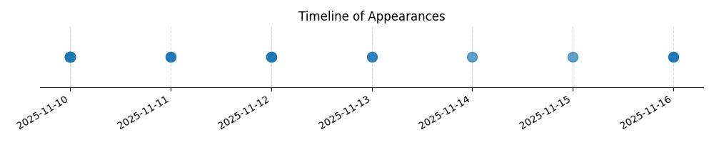

Kategorie: Letecké předpisy
Pilotní průkaz (licence) je základním dokladem, který opravňuje pilota k provádění letů. Jeho platnost je časově omezena a musí být pravidelně prodlužována. Provoz s prošlou platností licence je nelegální. Otázka se ptá, k čemu licence s prošlou platností neopravňuje. Možnost A správně uvádí, že neopravňuje k samostatné letové činnosti. Dále zmiňuje možnost létání s instruktorem či inspektorem, pokud je průkaz sice prošlý, ale je platný lékařský posudek. Toto by mohlo být relevantní v kontextu dočasných výjimek nebo specifických pravidel pro prodlužování, ale primárně licence bez platnosti neumožňuje žádný let. Možnost B je nesprávná, protože platný lékařský posudek nezpůsobilost k letu s instruktorem či inspektorem s prošlým průkazem nezaručuje. Možnost C je nesprávná, protože údržba SLZ (sportovních létajících zařízení) není přímo spojena s platností pilotní licence, ale s jinými kvalifikacemi a předpisy.

| Datum výskytu |
|---|
| 2025-11-16 |
| 2025-11-15 |
| 2025-11-14 |
| 2025-11-13 |
| 2025-11-12 |
| 2025-11-11 |
| 2025-11-10 |